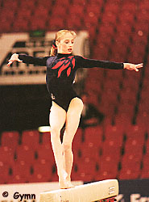

Lisa Mason (GBR)
1997 and 1998 GBR Champion
 |
Lisa was born on February 26, 1962. She trained at the Huntington Gym Club with coach Terry Sharpington.
Competition Results
1996
Camberley International: 1st AA
Canberra Cup: 11th AA
Jr. European Championships: 9th AA
1997
Coupe Mosane: 1st AA
European Youth Olympic Days: 11th AA
GBR-RUS Dual Meet: 2nd Team, 7th AA
GBR Championships: 1st AA
International Championships of Romania: 8th AA, 1st UB, 6th FX
International Jr. Championships: 24th AA
Jr. GBR-ESP Dual Meet: 3rd AA
1998
Commonwealth Games: 4th AA, 1st V, 8th B
Cottbus International: 1st FX
DTB Cup: 3rd FX
European Championships: 20th AA, 4th FX
GBR Championships: 1st AA, 2nd V, 2nd B, 3rd UB, 3rd FX
Glasgow Grand Prix: 2nd FX, 3rd V, 6th UB, 7th B
1999
DTB Cup: 3rd V, 6th B, 7th FX
GBR Championships: 2nd AA
Glasgow Grand Prix: 4th FX, 8th B
World Championships: 11th Team, 26th AA
Zurich Grand Prix: 6th FX
2000
Belarus Open Cup: 6th AA
European Championships: 10th AA, 7th B
FRA-GBR-CAN-GER: 3rd AA
GBR Championships: 6th AA
Glasgow Grand Prix: 4th V, 5th B
Olympic Games: 10th Team, 23rd AA
RCA Gymnastics Challenge: 8th AA
2004
GBR Championships: 10th AA
This page was created on January 27, 2000
and was last updated on December 26, 2004.
© Gymn Forum